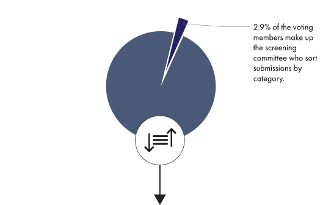
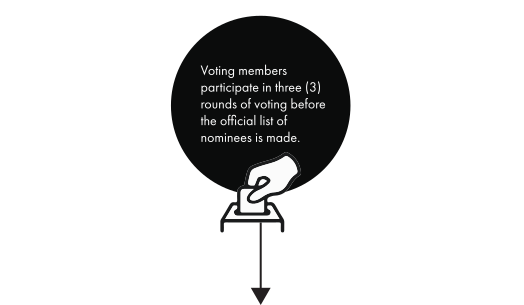

Around 350 experts in various fields out of over 12,000 voting members determine whether or not each entry is eligible and sort submissions into the 84 categories within 30 fields/genres.
Expertise is determined by what credits you have music on. (i.e. If you're a producer for a rock album and an R&B album, you are considered a rock and R&B expert).

Members can vote only in their area of expertise;
up to 15 of the Grammy Awards' categories, as well as in the four all-genre general
field categories (Record of the Year, Album of the Year, Song of the Year, Best New Artist).